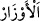
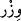
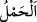

“Ey pişmanlık, senin de bir vaktin varsa işte şu an gelme vaktin!” Çünkü biz kıyametin
vakti hususunda ihmalkar olduk. Ona îman edip sâlih ameller işleyerek o vakte
hazırlanmak ve o vaktin hakkına riâyet etmekte kusurlu davrandık.
Tefrit, yapmaya gücü yettiği halde bir vazifeyi yerine getirmede kusurlu davranmaktır.
Âyetteki “günahlar” anlamındaki “
” kelimesi
’in çoğuludur. Aslında ağır yük
demektir. Vezir kelimesi de buradan gelmektedir. Çünkü vezir, halkı ile ilgili işlerde
melikin kendisine verdiği görevleri üstlenir. Sultanın halkına karşı olan bazı
sorumluluklarını üzerine alır. Günaha da sahibine yüklediği ağır sorumluluktan ötürü
“vizr” denilir.
“
” yani yüklenme, taşıma kelimesi, gözle görülebilen kesif cisimler hakkında
kullanılır. Ârızî mânâlar için bu ifade kullanılmaz. Ancak temsil (misal getirme) ve
teşbih yoluyla kullanılabilir.
Âyette “sırtlarında” ifadesinin zikredilmesi “Başınıza gelen herhangi bir musibet
kendi ellerinizin yapıp kazandıkları yüzündendir.” (Şûrâ 42/30) âyetinde zikredilen
“elleriniz” ifadesi gibidir. Çünkü kazanç genellikle el ile elde edildiği gibi yük de sırtta
taşınır.
Mânâ şöyledir: “Onlar işledikleri günahların yükünü sırtlarında taşıdıkları halde
dünyada işlemedikleri salih amellere pişmanlık duyarlar.”
“Bakın, ne kötü şeyler yüklenip taşıyorlar!” Yüklendikleri şeyler ne kötü, ne çirkin
ağırlıklardır.
Süddî ve diğerleri şöyle demişlerdir: Mü’min kabrinden çıktığında onu gayet güzel
yüzlü, düzgün yapılı ve mis kokulu bir şey karşılar ve ona: “Beni tanıdın mı?” diye
sorar. Mü’min: “Hayır tanımadım.” diye cevap verince o: “Ben senin salih amellerinim,
haydi bin sırtıma, seni taşıyayım. Çünkü, dünyada iken sen de beni taşımıştın.” der.
Nitekim bir âyet-i kerîmede “Takvâ sahiplerini, binek üzerinde ikram ile Rahman’a
götürdüğümüz gün.” (Meryem 19/85) buyurulmuştur.
Kâfiri ise kabrinden çıktığı anda çirkin görünüşlü ve kötü kokulu bir şey karşılar ve
ona: “beni tanıdın mı?” diye sorar. O: “Hayır tanımadım.” diye cevap verince şöyle
der: “Ben senin kötü amellerinim, dünyada iken bana çok binmiştin, bugün de ben sana
bineceğim.” İşte “günahlarını sırtlarına yüklenmiş olarak” ifadesinin mânâsı budur.
Orada “yüklenmek”, hakiki manadadır. Çünkü her ne kadar kendileri ârızî şeyler olsa da
amellerin ahirette zâhir olacak sûretleri, şekilleri vardır.
Bil ki, günah yükleri çeşit çeşittir. Ancak varlık iddiasının günahı, hepsinin
üstündedir. Çünkü diğer günahlara sebep olan odur. O, sülûke mânî olan bir ağırlıktır.
Hak yolunun yolcusuna (sâlik) gereken, bütün günahlara tevbe etmek, Hak yolunda
tamamen fânî olmaktır.